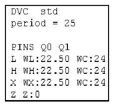

ASCII Timing File
An ASCII timing file consists of a sequence of ASCII device cycle blocks. The ASCII timing file serves to define the meaning of state characters. Every such definition is specified for a combination of state character, pin, and ASCII device cycle. Thus, the same state character can have a different definition for the same pin in different ASCII device cycles.
The state character definition is a sequence of fixed actions, each of which is associated with a delay. Such a pair of action and delay is called an event. Furthermore, every ASCII device cycle defines a common DUT cycle length for all pins, which determines the time frame of the actions associated with one state character; this value will be referred to as an ASCII period. The following figure shows part of an ASCII timing file containing a start segment of an ASCII device cycle:

Notice the following points in the figure:
- The figure shows the state character definitions for the combinations of the pins Q0, Q1 with the ASCII device cycle std; both combinations contain the same state character definitions.
- The DVC keyword specifies the name of the ASCII device cycle.
- The period keyword defines the ASCII period.
- The sample contains state character definitions for
L,H, X,
Z. Each of the first three definitions consists of two events and the
fourth consists of one. The fixed actions
(WL,WH,WC, and
Z) are defined in the same syntax as in the wavetable. The delays for
the individual actions are specified after the colon.Note The state characters can be any alpha-numerical characters (with certain restrictions). They do not appear in the generated setup except that they possibly occur in the device cycle names within the wavetable.